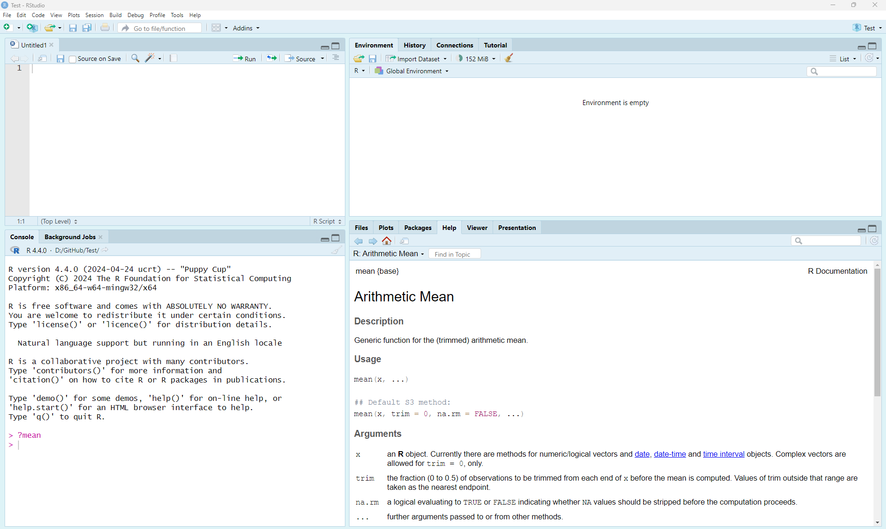
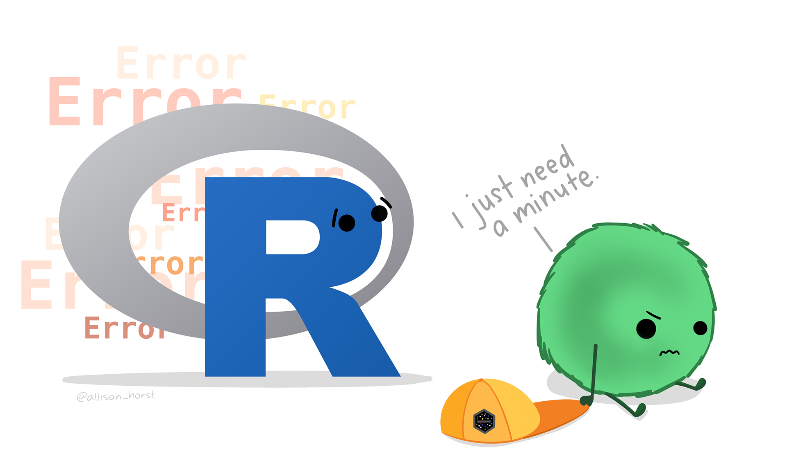

Guide 3: Introduction to R
A Compilation of Resources
This guide is a compilation of material developed by various Smithsonian researchers. Many thanks to all for sharing their code and knowledge in courses being taught at the Smithsonian-Mason School of Conservation (SMSC). Also included is material from workflows developed by the National Center for Ecological Analysis and Synthesis (NCEAS) of the University of California - Santa Barbara. We encourage you to investigate the courses being taught at SMSC and the resources available at NCEAS.
Introduction
R is a powerful statistical programming language that is used broadly by researchers around the world. Among the reasons to use R include:
- Free and open source!
- Runs on a variety of platforms including Windows, Unix and MacOS.
- An unparalleled platform for programming new statistical methods in an easy and straightforward manner.
- Contains advanced statistical routines not yet available in other software.
- New add-on “packages” are being created and updated constantly.
- State-of-the-art graphics capabilities.
R does have a steep learning curve that can often be intimidating to new users, particularly those without prior coding experience. While this can be very frustrating in the initial stages, learning R is like learning a language where proficiency requires practice and continual use of the program.
Installing R and R-Studio
R is available for Linux, MacOS X, and Windows (95 or later) platforms. Software can be downloaded from one of the Comprehensive R Archive Network (CRAN) mirror sites. It’s best to choose the R mirror that is closest to your location. Once installed, R will open a console where you run code. You can also work on a script file (preferred), where you can write and (importantly) save your work.
R-Studio is an enterprise-ready professional software tool that integrates with R. This integrated development environment (IDE) has some nice features beyond the normal R interface.

R-Studio IDE
R-Studio has four separate panels to organize your workflow and project. The entire interface is customizable, including fonts and colors of the text and background (see Customizing R-Studio). The four panels are:
- Source (code) Editor (upper left)
- Console (lower left) where your code is executed
- Environment/History (upper right)
- Files/Plots/Packages/Help (lower left)
Getting Help
One of the most useful and important commands in R is ?. All R functions should have an associated help file. At the command prompt (signified by > in your Console window), type ? followed by any command and you will be prompted with a help tab for that command (e.g., ?mean or help(mean)). Note, you can also search through the help tab directly by searching functions on the search bar.
Various blogs, mailing lists, and websites (e.g., https://stackoverflow.com/) are dedicated to providing information about R, its packages, and potential error messages that you may encounter (among other things). The trick is usually determining the key terms to limit your search.
Note that it’s important to read the error messages that R provides. These messages help understand when you have typed something that the computer doesn’t understand.

*Artwork by Allison HorstBasic R Concepts
There are a few concepts that are important to keep in mind before you start coding. The fact that R is a programming language may deter some users who think “I can’t program”. This should not be the case for two reasons. First, R is an interpreted language, not a compiled one, meaning that all commands typed on the keyboard are directly executed without requiring you to build a complete program like many other computer languages (e.g., C, Pascal). Second, R’s syntax is very simple and intuitive. For instance, a linear regression can be done with the command lm(y ~ x) which means fitting a linear model with y as the response and x as a predictor.
In R, we need to send a command to the “prompt” for the command to be executed. A greater than sign (>) in the console indicates that R is ready to accept commands. Functions always need to be written with parentheses, even if there is nothing within the parentheses (e.g., ls() instead of ls). If you type the name of a function without parentheses, R will display the content of the function. See what happens when typing ls instead of ls() in the Console.
Variables, data, functions, results, are stored in active memory in the form of objects that you assign with a name (x = c(1,2,3)). The user can then execute actions on these objects with operators (arithmetic, logical, comparison) and functions (e.g., x + 3). We can send and work directly in the console, or much better, we can create a script so that we can edit the code and re-run the analysis in the future.
Naming Conventions
The name of an object must start with a letter (A-Z or a-z) and can be followed by letters, digits (0-9), dots (.), and underscores (_). Do not include spaces. It is also important to note that R discriminates between uppercase and lowercase letters in the names of objects, so that x and X can name two distinct objects.
In addition to commenting your code, there are best practices to help make your code more readable. This includes using appropriate naming conventions, such as snake case or Camel Case:
- some_use_snake_case
- SomePreferCamelCase
Choosing a naming convention is a personal preference. Most important is to choose a format and be consistent! You (and your collaborators) will thank you for it.
Be careful with forward and back slashes
When referring to the directory of a folder or a data file, R uses forward slash “/”. You need to pay close attention to the direction of the slash if you copy a file path or directory from a Windows machine.
Starting R - Setting your working directory
Like many other programs, you should start your session by defining your working directory - the folder where you will work. This will be the location on your computer where any files you save will be located. To determine your current working directory, type getwd() in the Console:
Use setwd() to change or set a new working directory. For instance, you can set your working directory to be in your Documents folder on the C:/ drive, or in any folder you prefer.
Avoid using the setwd() command
If you are using R-Studio, there is no need to set your working directory (R-Studio will do this for you automatically). This is very convenient, as relative paths are maintained, allowing you to share your project with collaborators without a need to set the absolute path. Once you start working in projects, you should never need to run the setwd() command again.
The goal is to organize your project so that all of the files needed to complete your analyses are contained within the main folder (i.e., the folder contents are a compendium of your research). This also means that you do not need to provide the full path to any of the files located in subfolders. Working with relative paths makes your code much more portable.
Some common directories and best practicies for organizing your project include:
- Data: Where to store your data files (often with subdirectories for raw and processed data)
- Scripts: Where to store your scripts for data cleaning and analysis
- Output: Where to store or write plots, graphs, or figures generated in your analysis
- Documents: Summaries or reports of analysis or other relevant project information
The directories you use will vary from project to project. The key point is to keep all the resources you need to complete your analyses in a well organized project. This will help in the future when you need to share files with collaborators or reproduce results.
R Fundamentals
Data Types
There are four fundamental data types in R that you will work with:
- Character: Data are string values (a word or sequence of words)
- Numeric (also called double): Data are numbers that contain a decimal
- Integer: Data are whole numbers (no decimal point)
- Logical (also called boolean): Data that are either
TRUE,FALSE, orNA
You can check the data type of an object using the function class() or using logical tests such as is.numeric(), is.character(), and is.logical(). To convert between data types you can use: as.integer(), as.numeric(), as.logical(), as.character().
For instance:
city <- 'Nairobi'
class(city)
number <- 3
class(number)
Integer <- as.integer(number)
class(Integer)
double <- 56.2
class(double)
is.numeric(double)
logical <- 3 > 5
logical
Assigning Date to objects
Since R is a programming language, we can store information as objects to avoid unnecessary repetition. To keep information in R, we need to create an object. We can assign a value of a mathematical operation (and more) to an object in R using the assignment operator <- (greater than sign and minus sign). The general format for using the assignment operator in R is: object_name <- value. By doing so, we can re-use the object and use it in additional calculations.
Objects stored in memory
After creating an object, R doesn’t print anything to the screen. We can force R to print the object by calling the object name (i.e., by typing it out) or by using parentheses. In addition, if we look at our Environment tab (upper right panel), we will see that the object has been stored in R.
Special Characters
The # character is used to add comments to your code. # indicates the beginning of a comment and everything after # on a line will be ignored and not run as code. Adding comments to your code is considered good practice because it allows you to describe in plain language (for yourself or others) what your code is doing.
You can also use the semicolon (;) so that you can write different commands on the same line of code.
# This is a comment
# Combining commands using ;
a <- 3; b <- 6; c <- a+b
a
b
c
# Multiple our numbers object by 3
numbers * 3
Data Structures in R
Vectors
Vectors are a basic data structure in R. They contain a sequence of data and can contain characters, numbers, or TRUE/FALSE values. Below are several examples of simple vectors.
Getting help
If you are unsure or need help, use the help function (e.g., help(seq) or ?seq).
Vector Notation
To see only part (i.e., a subset) of the data stored in a vector, you need to “ask” R to extract the information you want using square brackets (e.g., []). Most commonly, you will indicate in square brackets the position of the data you want to extract (from beginning of the vector [1] to the Nth slot in the vector [n]).
# Create vector
x <- c(1,3,8,21,48,56,4,29,182,5)
x
# Using vector notation, we can extract any number in the sequence. For instance, x[4] will return the 4th number in the sequence
x[4]
Matrices and Dataframes
Matrices and dataframes are common ways to store tabular data. Understanding how to manipulate them is important to be able to conduct more complex analyses. Both matrices and dataframes are composed of rows and columns. The main difference between matrices and dataframes is that dataframes can contain many different classes of data (numeric, character, etc.), while matrices can only contain a single class.
Here we’ll create a matrix with 4 rows and 5 columns using the data from x above. Consult the help (e.g., help(matrix) or ?matrix) to determine the syntax required.
Subsetting Matrics and Dataframes
You can reference any value in the matrix using matrix notation. The first value in matrix notation references the row and the second value references the column.
Functions
R functions can be defined as a collection of arguments structured together for carrying out a task. Most functions have optional arguments or are given default values.
Functions normally can be called using the following syntax: result_value <- function_name(argument1 = value1, argument2 = value2, ...).
When you don’t specify the optional arguments, they will take the default values. R contains many pre-existing functions. Simple numeric functions include sum(), mean(), sd(), min(), max(), median(), range(), quantile(), or summary(). Try a few of these on the numeric vectors you have created.
Calculations & Arithmetic Operators
As you’d expect, R can be used to perform calculations and report the results back to the user. This includes simple or complex mathematical calculations (e.g., min, max, exponentiate)
# Additional, subtraction, multiplication, and division
4+2
6*8
(842-62)/3
# Exponentiate
2^3
# Min and Max
vector_numbers <- c(2, 3, 4, 10)
max(vector_numbers)
min(vector_numbers)
Logical operations and Expressions
Relational operators (<, >, =, !=, >=, <=) evaluate a conditional expression and return TRUE or FALSE. Commonly used relational operators include:
==means ‘is equal to’!=means ‘is not equal to’<means ‘is less than’>means ‘is greater than’<=means ‘is less than or equal to’>=means ‘is greater than or equal to’
Other Resources: SWIRL
R packages are the building blocks of computational reproducibility in R. Each package contains a set of related functions that enable you to more easily do a task or set of tasks in R. There are thousands of community-maintained packages out there for just about every imaginable use of R.
SWIRL is a user-generated program package (also called a library) for learning how to code in R. To access the tutorial information, you must first install the package to make it accessible. In the Console window (bottom left), type the following and press ENTER:

This may take a little while, but when the stop sign in the upper right of the console window is gone, you can proceed. For any package you install in R, you will also need to turn them on before using them. You can do this with the require() or library() functions. Type this now:
Note: You may be prompted to select a “mirror” from which to download the package. If this is the case, it is recommended that you choose the mirror that is geographically closest to you.
To install the lesson, you will need to use:
Find out more about other courses, and other download options here: https://github.com/swirldev/swirl_courses
SWIRL Lessons
There are many lessons within R. Once SWIRL is loaded, you will be given the option of which lessons to complete. Some of the core lessons can be found in the initial section labeled R Programming. The estimated time to compete required lessons is about 2 hours. We recommend to start with the following lessons:
- Basic Building Blocks (10 min)
- Workspace and Files (15 min)
- Sequences of Numbers (5 min)
- Vectors (8 min)
- Missing Values (5 min)
- Subsetting Vectors (12 min)
- Matrices and Data Frames (13 min)
- Logic (optional)
- Functions (30 min)
- lapply and sapply (optional)
- vapply and tapply (optional)
- Looking at Data (5 min)
- Simulation (optional)
- Dates and Times (10 min) (optional)
- Base Graphics (10 Min)
Run SWIRL
Type the following to begin using SWIRL. Also, when restarting your session later, you’ll need to “turn on” SWIRL each time with either library(swirl) or require(swirl).
Have Fun!